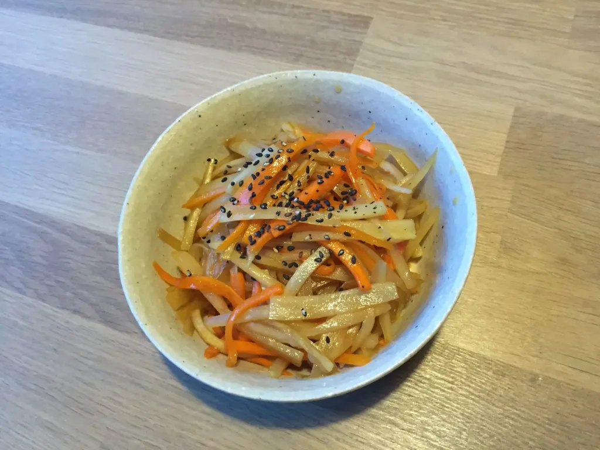

Kinpira gobo

Ingredienten
- 2 schorseneren
- 1 bospeen
- 1 eetlepel sake of witte wijn
- 1 eetlepel suiker
- 2 eetlepels sojasaus online verkrijgbaar
- 2 eetlepels mirin online verkrijgbaar
- 1 theelepel sesam olie
- 1 eetlepel azijn
Bereiding
- Stap 1
Spoel aarde af van de schorseneren en schil de huid.
- Stap 2
Snijd schorseneren in dunne reepjes. Doe ze in een kom met water met 1 eetlepel azijn.
- Stap 3
Snijd bospeen in dezelfde maat als schorseneren.
- Stap 4
Meng suiker, sojasaus en mirin en maak saus.
- Stap 5
Laat de schorseneren uitlekken.
- Stap 6
Verhit sesam olie in een pan en doe schorseneren en bospeen in de pan. Voeg 20cc water met 1 eetlepel sake toe en kook ze tot er geen vloeistof in de pan zit. Voeg de saus toe en kook ze tot de saus helemaal opgenomen is door de schorseneren en bospeen.
- Stap 7
De kinpira gobo is klaar. Serveer besprenkeld met wat zwart sesamzaad.